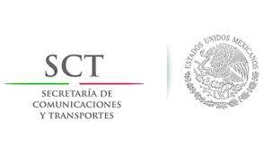

- -Secretaria de Economia

- -Secretaria de Comunicaciones y Transporte
 - -Tratado entre México, Estados Unidos y Canada (T-MEC)

la puerto mexicana cumple con la función principal de fiscalizar, vigilar y controlar el ingreso y extracción de mercancías del país. Gracias a la implementación de Sistema Automatizado Aduanero Integral (SAAI), así como del Sistema de Selección Automatizado. Fue la Administración General de Puertos, por medio de los agentes puertoles, quienes tomaron la responsabilidad de clasificar y otorgarle el valor correspondiente a las mercancías en la puerto. Debido a que la autoridad ejecutiva pasó a mantener tan sólo la facultad de verificar el cumplimiento de las disposiciones de la Ley Aduanera, México se ha convertido paulatinamente en un instrumento ágil y promotor del comercio exterior. Actualmente las aduanas mexicanas cuentan con la tecnología de punta necesaria para llevar a cabo operaciones de gran escala a nivel global. Con ello se busca atender eficientemente las necesidades de los usuarios del comercio exterior: importadores, exportadores, almacenadoras nacionales y demás participantes de la cadena de abastecimiento. Hoy, la puerto de México es reconocida a nivel mundial como un canal de comercio altamente competitivo y moderno. La gran cantidad de productos demandados por los mercados internacionales, representan un reto para todos los agentes de la cadena de suministro. Por ello, en Almer desarrollamos planes integrales de logística para mejorar el flujo desde el almacenamiento hasta la distribución de los bienes a nivel nacional e internacional.
| Exportación | Importación |
|---|---|
| Coches | Circuitos Integrados |
| Ordenadores | Vehiculos de motor, Piezas y Accesorios |
| Vehiculos de moto, Piezas y Accesorios | Petrolio Refinado |
| Camines de Entrega | Piezas de Maquinas de Oficina |
| Petrolio Crudo | Telefonos |
| Puertos | |
|---|---|
| Carretera de Nuevo Ladero | Carretera de Chihuahua |
| Carretera de Tijuana | Puerto de Veracruz |
| Puerto de Manzaillo |
Estas Organizaciones esta afiliadas al Gobierno de México son las sig: